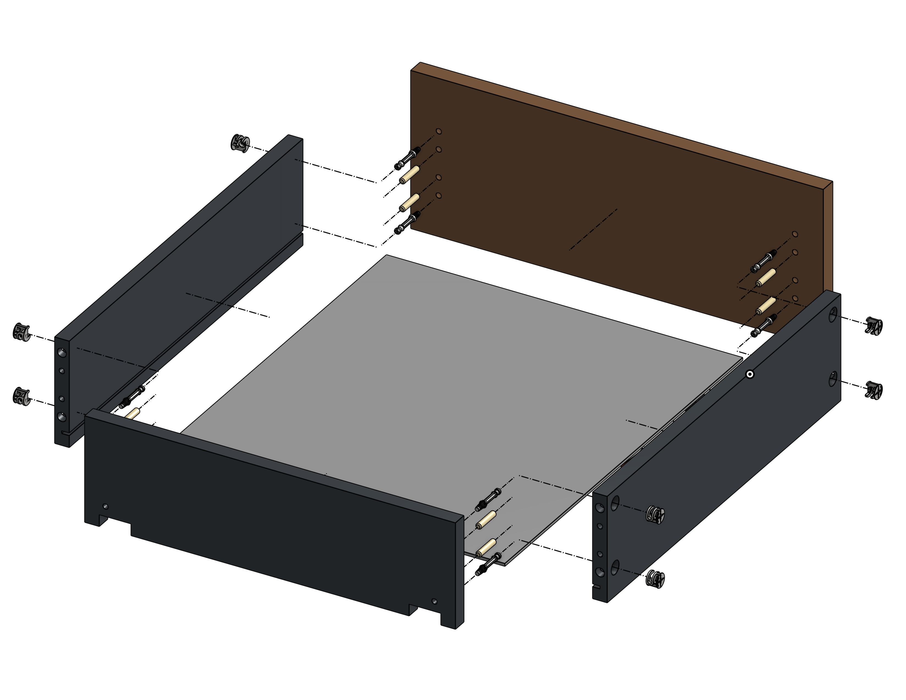
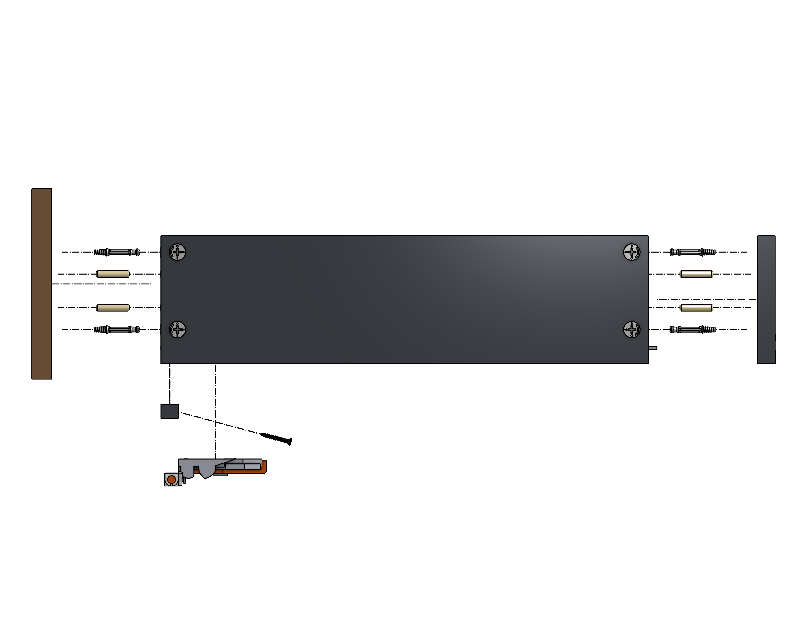
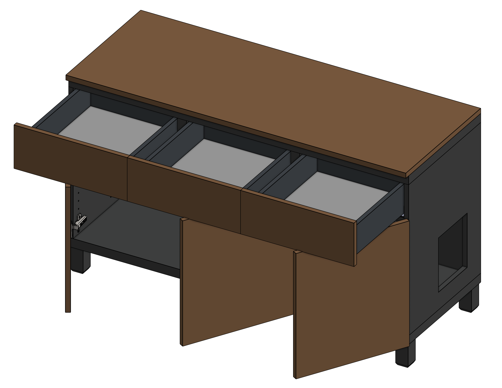
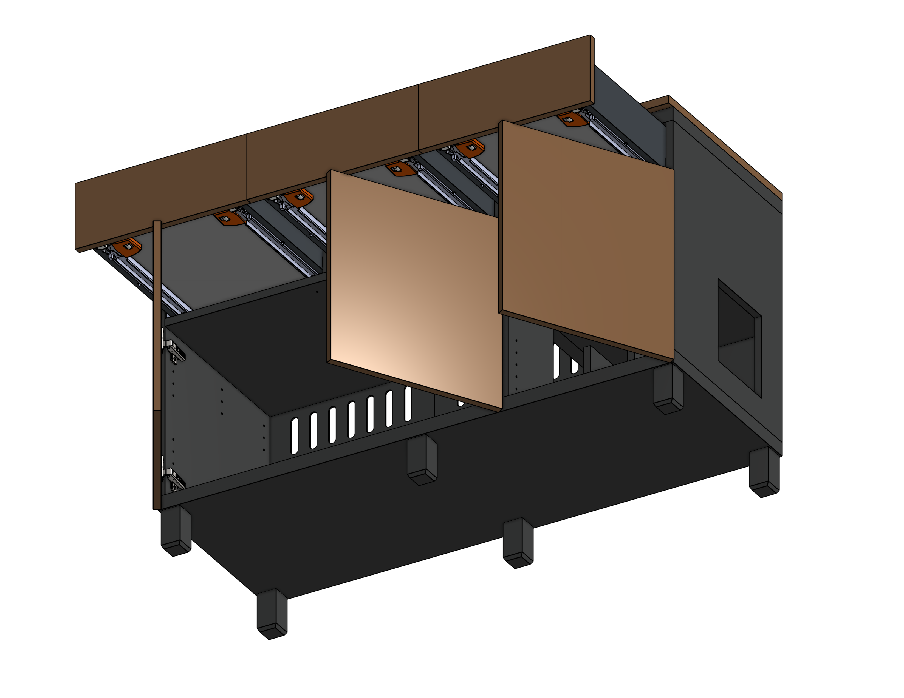

Overview
The problem with every litter solution on the market
Cat owners go through the same journey. The litter box starts in the bathroom — out of sight, but litter ends up everywhere, so you buy a mat that barely helps. The mess becomes unbearable, so you invest in an enclosure. Now it looks cleaner, but the mat is still there, the litter trashcan is still sitting out in the open, and your setup still occupies a disproportionate footprint in your home.
Every enclosure on the market solves only one thing: hiding the litter box. None address where the waste goes, how litter gets tracked beyond the entrance, or what the product looks like in a real living room. Most are styled with cat-themed cutouts and barn-door silhouettes — decorative signals that announce rather than conceal their purpose.
"Imagine a piece of furniture you'd put in your hallway that also happened to contain everything cat litter–related — and you'd never know it."
This project set out to design exactly that.
The Challenge
Four problems, no complete solution
Existing products treat these as separate issues. This design treats them as one system.
It doesn't look like furniture
Cat-themed cutouts and rustic barn styling signal their purpose immediately. No current product could blend into a modern living room or hallway.
Exposed waste storage
Every enclosure hides the litter box. None account for the dedicated waste bin (Litter Genie, Litter Zero) that lives right next to it.
Litter tracking
No mat or enclosure stops cats from carrying litter beyond the exit. The problem isn't the type of litter you use — it's exit path geometry.
Wasted real estate
A litter box, enclosure, mat, and waste bin together consume significant floor space with zero storage return for the owner.
Competitive Analysis
What the market actually offers
A review of top-selling litter enclosures on Amazon, Chewy, and Wayfair revealed that every product makes the same scoping decision: hide the litter box, ignore everything else.
| Photo | Product | Furniture aesthetic | Hides waste bin | Litter trapping | Extra storage | Price |
|---|---|---|---|---|---|---|

|
Tucker Murphy Pet | ✓ | ✗ | ✓ | ✓ |
Mid $190 |

|
Halitaa | ✓ | ✗ | ✓ | ✗ |
Budget $110 |

|
Homhedy | ✓ | ✗ | ✗ | ✗ |
Budget $80 |

|
Hoobro | ✗ | ✗ | ✓ | ✓ |
Budget $115 |

|
Ebern Designs | ✗ | ✗ | ✓ | ✗ |
Mid $250 |

|
Litter-Robot (automatic) | ✗ | ✓ | ✗ | ✗ |
Premium $600–900 |

|
Lifewit | ✗ | ✗ | ✗ | ✗ |
Budget $70 |

|
This design | ✓ | ✓ | ✓ | ✓ |
Mid ~$249–399 |
Most enclosures solve one thing: hiding the litter box. No competitor addresses waste bin storage. A few address litter tracking, but a single straight corridor isn't enough. Some offer extra storage but it's rarely enclosed. The Litter-Robot handles waste automatically but costs $600–900, requires power, and reads as an appliance, not furniture. Tucker Murphy Pet comes closest aesthetically, but leaves the waste bin exposed and the exit path too short to prevent tracking.
Research & Discovery
Constraints worth engineering around
Before sketching anything, I established the non-negotiable dimensional and ergonomic requirements — for the cat, for common cleaning hardware, and for the space itself.
Design constraints
Before any layout work, I defined a set of non-negotiable constraints — requirements the design had to satisfy completely, not partially. These drove every dimension and structural decision in the CAD model.
Must fit a large litter box
The interior chamber needed to accommodate the largest commonly sold enclosed litter boxes — not just a standard size — so the design wouldn't exclude cats that require extra space or owners already invested in a specific box. This set the minimum interior width and depth of the litter compartment.
Must accommodate a litter waste bin
The Litter Genie and Litter Zero are the most common dedicated litter waste bins. Their dimensions set the additional space needed to have it stored next to the litter box of the main compartment. This was non-negotiable — it was the core gap the entire design was built to close.
Ventilation without sacrificing aesthetics
An enclosed litter area traps ammonia from cat waste, which can discourage use and is a health concern over time. The enclosure needed a passive ventilation solution — whether through gap geometry, louvres, or a hidden charcoal filter — that didn't introduce visible cutouts or grilles that would undermine the furniture aesthetic.
The cat must easily find and access the litter box
If the entry path is confusing, poorly lit, or physically demanding, cats will avoid the enclosure and eliminate elsewhere. The corridor geometry, entry aperture, and step-over height all had to be optimised for instinctive, frictionless use. A cat who is unsure or uncomfortable will not use it.
Must fit in an apartment — minimum footprint, full functionality
The target user lives in a 600–900 sq ft urban apartment. Every square inch the enclosure occupies has to earn its place. The design was sized to the smallest viable footprint that still satisfied constraints C1 through C4 — no dimension was generous by default.
Surplus storage — useful beyond cat ownership
The enclosure had to justify its footprint to non-cat-owners in the household too. Drawers, shelves, or cabinet space for non-cat items — blankets, cleaning supplies, books — make the piece furniture first, cat product second. This is also what allows it to live in a living room rather than a utility room.
Modular — swappable panels, legs, and finishes
IKEA's success is partly built on mix-and-match modularity: owners personalise their furniture without replacing the whole piece. This design follows the same principle — tabletop colour, base colour, door and drawer faces, leg height, and textures are all independently swappable. This expands the addressable market significantly without increasing manufacturing complexity.
Feline ergonomics
Based on guidelines from International Cat Care and the American Association of Feline Practitioners, the enclosure's interior needed to meet minimum standards for a cat of any age or mobility level — not just a healthy adult.
| Requirement | Spec (in) | Spec (cm) | Rationale |
|---|---|---|---|
| Litter box headspace | 15″ – 20″ | 38 – 51 cm | Full standing, turning, and periscoping |
| Tunnel / corridor diameter | 8″ – 10″ | 20 – 25 cm | Neutral spine posture while walking through |
| Walk-over height | 3″ – 5″ | 7.5 – 12.5 cm | Accessible for senior and mobility-limited cats |
| Step-down height | 5″ – 7″ | 12.5 – 17.8 cm | Reduces forelimb load for older cats on descent |
User insights
Reviewing community discussions and walkthroughs of how real cat owners manage their setups revealed two consistent patterns:
Litter tracking is universal regardless of type — fine-grain litters like clay or crystal cling to paws for up to 20 feet, while heavier pellets drop within 2 feet but still need a mat at the exit. The mat itself becomes a problem: wasted floor space, an obstacle to step over, another surface to clean. Owners consistently said they'd rather vacuum a contained corridor than chase litter across their home. Almost every setup looks identical: litter box, some concealment, a waste bin in the open, all sitting on a mat that only partially helps. The problem is systemic — no product on the market fully conceals the litter setup and passes as real furniture."
Who This Is For
The primary user
The design targets a specific type of cat owner — one who has already tried the standard progression of solutions and is still unsatisfied. They're not looking for a novelty product. They want something that solves the problem completely and doesn't embarrass them aesthetically.
The Design-Conscious Cat Owner
27–38 · Urban apartment, 600–900 sq ft · One or two cats · $65K–$110K income
Sample content Refine with your own research — apartment size, income, shopping habits, how they discovered existing solutions were lacking.
"I want to keep my living space clean and intentional, but every litter solution I've tried either looks obviously cat-related or only solves part of the problem — and I'm still finding litter on my couch."
The Solution
One piece. Four problems solved.
The design is a furniture-grade enclosure with a clean top surface, neutral material finish, and no cat-signaling aesthetic cues. From the outside, it reads as a credenza or hallway cabinet. Inside, it contains an engineered system for every problem the existing market ignores.
Ideation & early decisions
Sample content Replace the diagram and process steps below with your actual sketches, rough CAD screenshots, and the specific alternatives you ruled out (straight tunnel, top-entry hatch, etc.).
Option A — Rejected

1 large drawer at the top. Waste bin drawer on the left. Drawer on the bottom to slide out the litter box for cleaning. Front entry. Rejected because the door face setup was awkward and the catwalk is not well supported. Realize the waste bin does not need its own separate compartment.
Option B — Rejected

Wanted to see if a smaller footprint without a litter waste bin compartment. Explored an option of having a catwalk in the back that sits over the litter box to capture more litter. Rejected because the catwalk blocked the litter box too much and raising it created such a steep height difference which may be too discouraging for a cat and to propel to that height to get out can create a mess kicking litter on the jump. I also think there's too much wasted space for the height of the front entryway, even putting a skinny shelf their has low usability.
Option C — Chosen

I decided to expand the footprint to include a maze with 3 forced turns to guarantee all litter is deposited before exit. I used the extra spaces to create 4 storage sections. Even though this is the largest design, it has no wasted space / functionality in every corner / utilized space well, and meets all criteria.
[Placeholder: Concluding sentence about why Option C was chosen]
Define the full problem scope
Before sketching, I listed every object in a typical cat owner's litter setup: box, enclosure, mat, waste bin, scooper, cleaning supplies, cat supplies. The design brief became: contain all of it in one piece of furniture.
Establish non-negotiable constraints
Seven constraints were locked before any layout decisions: litter box size, waste bin size, ventilation, cat accessibility, apartment-sized footprint, owner storage utility, and modular finishes. These drove every dimension in the CAD model rather than being retrofitted later. See the Research section for the full constraint breakdown.
Solve litter tracking geometrically
The maze corridor emerged from asking: what if the entry path itself were the litter mat? A straight tunnel was ruled out — cats can exit in 1–2 leaping strides. A top-entry hatch was ruled out for accessibility and because litter still cascades out on exit. The U-shape forces three direction changes and maximises steps taken inside.
Sample content Add any additional alternatives you tested — angled baffles, two-room designs — and your specific reasoning for ruling each one out.
Model in Onshape
With layout logic validated, the full design was modelled in Onshape. Panel thicknesses were set at ¾″ (19mm) to match standard furniture-grade plywood. All interior clearances were verified against the feline ergonomics table before finalising dimensions.
Sample content Replace with your actual CAD decisions — joinery method, flat-pack vs. pre-assembled, specific tolerance challenges, material thickness assumptions.
Assembly & construction
The CAD model was developed with assembly clarity in mind — each component is a discrete panel or sub-assembly that maps to a logical build sequence.
Sample content Replace the three diagrams below with your actual Onshape exploded view exports. Aim for: (1) full assembly overview with all panels labelled, (2) maze corridor isolated, (3) waste bin compartment detail.

Exploded assembly overview — sample diagram. Replace with your Onshape exports and actual panel dimensions.

Drawer assembly 1.

Drawer assembly 2.

All drawers and doors open.

All drawers and doors open.

Exploded assembly overview — sample diagram. Replace with your Onshape exports and actual panel dimensions.
Fill in Replace this paragraph with your actual material choices, panel thickness, and joinery method from your Onshape model.
The enclosure is designed around ¾″ (19mm) furniture-grade plywood with an oak veneer face — the same material and finish language as IKEA's upper-tier cabinet lines. Panels join via cam-lock hardware for flat-pack assembly. Maze corridor walls are ½″ MDF for weight reduction. All interior surfaces use a low-VOC paint for easy wipe-down cleaning.
Bill of materials
Every component in the design — panels, fasteners, cam-locks, hinges, drawer slides, legs, and ventilation inserts — is fully specified in the Onshape model. Each part is parametric, meaning a change to a panel thickness or leg height propagates through the entire assembly automatically. The BOM below is a placeholder structure; export yours directly from Onshape and drop it in.
Fill in Export your BOM from Onshape (File → Export → BOM) and replace the table below with your actual part list. This section is one of the strongest signals of manufacturing readiness in the entire case study — don't skip it.
| # | Component | Material / Spec | Qty | Notes |
|---|---|---|---|---|
| 1 | Back panel large | 3mm High-Density Fiberboard (HDF) | 1 | — |
| 2 | Back panel small | 3mm HDF | 1 | — |
| 3 | Bottom panel | 36mm Medium-Density Fiberboard (MDF) | 1 | — |
| 4 | Column 1 | 18mm MDF | 1 | — |
| 5 | Column 2 | 36mm MDF | 1 | — |
| 6 | Column 3 | 36mm MDF | 1 | — |
| 7 | Column 4 | 18mm MDF | 1 | — |
| 8 | Column 5 | 18mm MDF | 1 | — |
| 9 | Top panel | 36mm MDF | 1 | — |
| 10 | Bottom shelf small | 20mm MDF | 1 | — |
| 11 | Top shelf large | 20mm MDF | 1 | — |
| 12 | Top shelf small | 20mm MDF | 1 | — |
| 13 | Tabletop | 20mm MDF | 1 | Swappable for different colors and styles |
| 14 | Drawer runner right | Steel, full-extension | 3 | — |
| 15 | Drawer runner left | Steel, full-extension | 3 | — |
| 16 | Drawer face | 18mm MDF | 3 | Swappable for different colors and styles |
| 17 | Drawer back wall | 18mm MDF | 3 | — |
| 18 | Drawer support bar | 16mm plywood | 3 | — |
| 19 | Drawer base | 3mm HDF | 3 | — |
| 20 | Drawer side wall | 18mm MDF | 6 | — |
| 21 | Drawer locking device, right | Plastic, T51.1901.PS | 3 | — |
| 22 | Drawer locking device, left | Plastic, T51.1901.PS | 3 | — |
| 23 | Door | 18mm MDF | 3 | Swappable for different colors and styles |
| 24 | Door Hinge | 35mm cup hinge, soft-close | 6 | — |
| 25 | Leg | Solid wood | 6 | Swappable for different heights and colors |
| 26 | 28mm Cam Dowel | Zinc alloy | 40 | — |
| 27 | 11.5mm Cam Lock | Zinc alloy | 32 | — |
| 28 | 18.5mm Cam Lock | Zinc alloy | 8 | — |
| 29 | 6mm×50mm Dowel Peg | Hardwood | 14 | — |
| 30 | 6mm×30mm Dowel Peg | Hardwood | 26 | — |
| 31 | Rounded Head Screws for Plywood | Zinc-Plated Steel, #6 Size, 1/2" | 42 | — |
| 32 | Tapping Inserts for Softwood Flanged | Zinc Alloy M8 × 1.25mm Thread, 20mm Installed Length | 6 | — |
| 33 | Flat Head Screws for Particleboard | Black-Oxide Steel, #6 Size, 1-1/8" | 12 | — |
U-shaped maze corridor
The single most effective change was rethinking the entry path. A U-shaped internal maze creates three direction changes, dramatically increasing the number of steps taken inside before a cat exits. More steps inside means more litter deposited on the interior floor before it ever reaches the outside world.
The trade-off is footprint. The U-shape adds width. But the calculus is clear: it is far preferable to vacuum a contained corridor than to find litter all around your house.

The white arrow shows the path cats will take to exit.

Interior layout — front section view. Replace with CAD export.
Dedicated waste bin compartment
A separate interior compartment houses the litter waste bin — a Litter Genie, Litter Zero, or equivalent. This is the detail every competing product omits entirely. No enclosure on the market includes a solution for the waste container. Here, it is designed in from the start: enclosed, accessible from a discrete panel, and out of sight.
Usable top surface
The top of the enclosure is flat, clean, and load-bearing — designed for plants, books, a lamp, or any decorative items that make a surface feel intentional rather than incidental. An optional wire management cutout accommodates a lamp or charging cable without surface clutter. Doors use a push-to-open latch mechanism, keeping the front face completely hardware-free and flush with the furniture aesthetic — no handles, no visible hinges. The enclosure earns its floor space by functioning as furniture in both directions.

Top surface with optional wire cutout and decorative styling.

Swappable leg variants — the same cabinet base accepts any leg height. Replace with CAD render.
Modular legs
The enclosure sits on swappable legs rather than a fixed base. This serves two independent purposes. First, it lets owners match the leg height to the aesthetic of their space — shorter legs for a low-profile Scandinavian look, taller legs for a mid-century silhouette. Second, and more practically, shorter legs lower the step-up height for senior or mobility-limited cats who may struggle to enter a raised enclosure, removing a barrier to consistent litter box use without changing anything else about the design.
Robot vacuum clearance is a welcome side-effect of the standard leg height — but it is not the reason for this design decision.

Structural package design - this shows how the contents of the furniture will fit in a box to be shipped. The main box will have all essential panels while the drawer faces, doors, legs, and tabletop will be separate for buyers to customize their furniture.
Passive ventilation
An enclosed litter space traps ammonia — the primary odour compound in cat waste. Left unaddressed, buildup discourages cats from using the box. The enclosure uses a passive ventilation path: a concealed gap along the top of the back panel draws air upward through a user-replaceable activated charcoal filter insert. There are no visible grilles, no powered fans, and no aesthetic compromise.
The filter is accessible from the rear without tools and replaceable on the same schedule as a standard charcoal filter — roughly every 4–6 weeks.

Structural package design - this shows how the contents of the furniture will fit in a box to be shipped. The main box will have all essential panels while the drawer faces, doors, legs, and tabletop will be separate for buyers to customize their furniture.
Package design and modularity
An enclosed litter space traps ammonia — the primary odour compound in cat waste. Left unaddressed, buildup discourages cats from using the box. The enclosure uses a passive ventilation path: a concealed gap along the top of the back panel draws air upward through a user-replaceable activated charcoal filter insert. There are no visible grilles, no powered fans, and no aesthetic compromise. 182mm x 1362mm x 500mm
The filter is accessible from the rear without tools and replaceable on the same schedule as a standard charcoal filter — roughly every 4–6 weeks.
Design specifications
Fill in Replace the footprint, panel material, and assembly method rows with your actual Onshape dimensions and confirmed material spec.
| Parameter | Value |
|---|---|
| Approximate footprint | 60″ W × 18″ D × 32″ H (sample — replace with Onshape dimensions) |
| Interior litter headspace | 15″ minimum |
| Corridor entry height | 10″ (cat), step-over 4″ |
| Ventilation | Passive — concealed back-panel gap with user-replaceable activated charcoal filter |
| Leg height | Modular — short (2.5″), standard (4.5″), tall (7″) variants |
| Panel material | ¾″ furniture-grade plywood, oak veneer face (sample — confirm) |
| Assembly method | Flat-pack, cam-lock hardware (sample — confirm) |
| Litter box capacity | Standard and XL enclosed boxes |
| Waste bin compartment | Compatible with Litter Genie / Litter Zero |
| Modeled in | Onshape — all panels, hardware, and fasteners fully parametric |
| Bill of materials | Complete — every screw, cam-lock, and bracket specified with part number and quantity |

Concept render with litter box equipment in a sample living room setting.
Market Opportunity
Why this product has a clear path to market
Sample content Verify these figures against the latest APPA Pet Industry Market Size report and Statista before using in a pitch. The ~$150B and ~46M figures are approximate 2024 estimates.
The automatic litter box market — products like Litter-Robot — has proven that cat owners will pay a significant premium for a solution that reduces daily maintenance effort. This design targets the same buyer at a lower price point, without requiring power, connectivity, or proprietary consumables.
The aesthetic positioning also opens a distribution channel that no current litter enclosure occupies: home furnishing retailers. Brands like IKEA, West Elm, and Crate & Barrel already sell furniture to the exact demographic who owns cats and cares about how their home looks. No litter product currently lives in that aisle.
Sample content Replace the paragraph below with your actual pricing rationale. Is this an IKEA flat-pack at ~$249, a mid-market piece at ~$499, or a premium CB2-tier product at $800+?
At a target retail price of ~$349 in a flat-pack format, the enclosure sits above commodity enclosures ($50–$150) but well below the automatic litter box segment ($500–$700). It earns its price through solved problems rather than electronics — and can be distributed through both pet specialty and home furnishing channels simultaneously.
Reflection
What this project taught me
The insight
The most important design decision wasn't aesthetic — it was the maze geometry. A straight path felt like the obvious choice for cat accessibility. Rethinking it as a litter-capture mechanism changed the entire interior layout. The constraint became the feature.
Systems thinking
Existing products were designed around a single pain point. Designing around the entire ecosystem — litter, waste, storage, ventilation, cat accessibility, and owner aesthetics — produced a solution that no individual feature could have reached on its own.
The gap in the market
The research confirmed that no product in this category publishes a diagram showing where the waste bin goes. That omission isn't an oversight — it reflects a fundamental scoping decision that every existing product has made. Expanding that scope was the project.
If I had more time
A physical prototype would validate the maze corridor dimensions against real cats — specifically whether the U-turn geometry eliminates litter tracking with any litter type. Additionally I'd like to explore designing a shorter and or front entry variant better for tight spaces, a multi-cat friendly variant, and taller cabin room for larger automatic litter robots, all without compromising functionaliy and aesthetics.